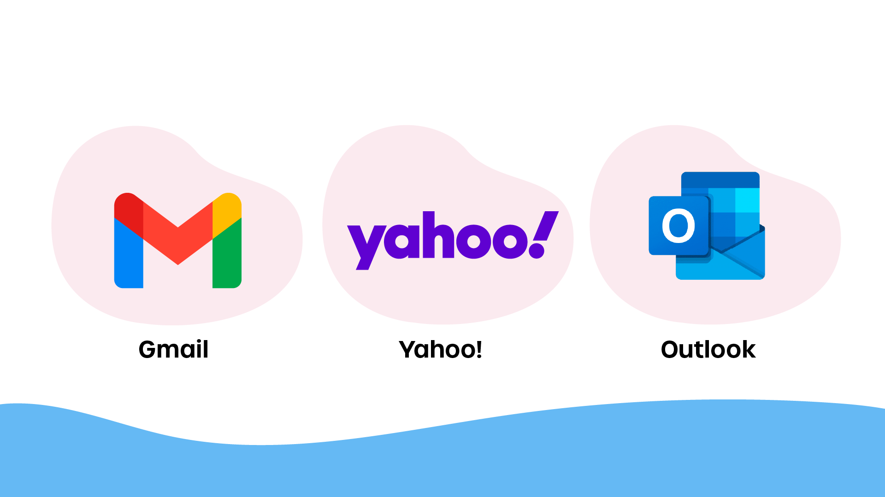
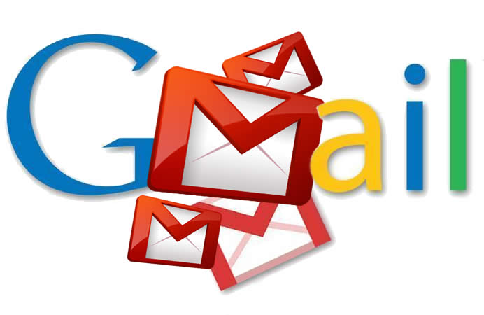
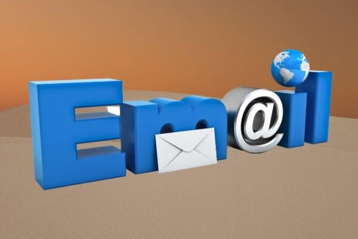
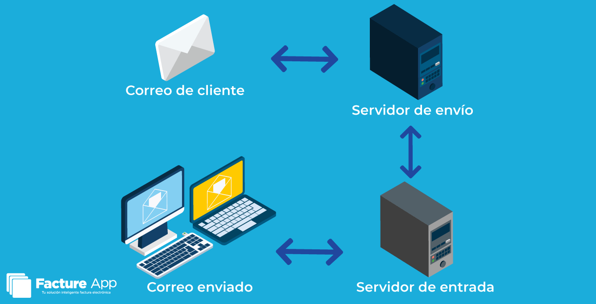

Elementos
- Remitente
- Destinatario
- Asunto
- Cuerpo del mensaje
- Archivos adjuntos

Tipos de Correos Electronicos
- Correo personal
- Correo institucional
- Correo corporativo
- Correo de marketing
- Correo informativo
- Spam

El correo electrónico, también conocido como e-mail, es un servicio de red que permite a los usuarios enviar y recibir mensajes electrónicos a través de Internet. Estos mensajes pueden contener texto, imágenes, archivos adjuntos, enlaces, audio y video.
El origen del correo electrónico se remonta a 1971, cuando el ingeniero estadounidense Ray Tomlinson envió el primer mensaje electrónico entre dos computadoras conectadas a una red. Fue él quien introdujo el uso del símbolo @, que separa el nombre del usuario del servidor donde se aloja la cuenta. Durante las décadas de 1980 y 1990, el correo electrónico comenzó a popularizarse con el crecimiento de Internet y el surgimiento de los primeros proveedores de servicios de correo. Con el paso del tiempo, se desarrollaron interfaces más amigables que facilitaron su uso a personas sin conocimientos técnicos. En la actualidad, el correo electrónico ha evolucionado para incluir funciones avanzadas como filtros inteligentes, protección contra spam, cifrado de mensajes, almacenamiento en la nube y sincronización entre múltiples dispositivos.


El funcionamiento del correo electrónico se basa en un sistema de servidores que envían, reciben y almacenan mensajes.

En la actualidad, el correo electrónico es una herramienta indispensable en la educación, el trabajo y la comunicación global.
En el siguiente video se muestra cómo crear paso a paso un correo electrónico